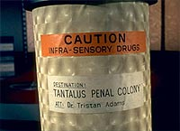
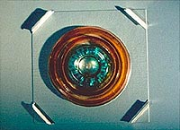
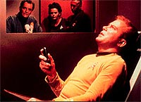
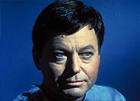
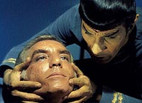
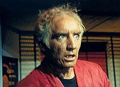
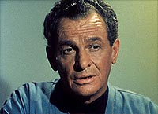
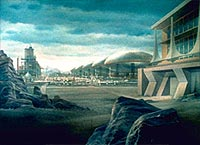

|
MANCHETE
DO EPISDIO
Aventura espacial esconde discusso
sobre os limites da tica psiquitrica
Episdio
anterior | Prximo episdio
Sinopse:
Data Estelar:
2715.1.
 A
Enterprise vai at a Colnia Penal Tantalus para entregar
suprimentos. Durante a troca de carga, um detento escapa para a
Enterprise, escondendo-se em um continer transportado a bordo.
Depois de detido, Spock o identifica como sendo Simon van Gelder, um
dos membros da equipe psiquitrica do complexo. O mdico est
apresentando fortes sintomas de transtorno e insanidade manaca. O
impulso de Kirk devolv-lo colnia, mas McCoy insiste para
que seja realizada uma investigao. O capito lembra o oficial-mdico
chege da reputao excelente de Tantalus e seu diretor, o dr.
Tristan Adams, mas McCoy no se convence.
Kirk resolve ento descer ao complexo, acompanhado pela dra. Helen
Noel, uma oficial da Enterprise com formao psiquitrica. Os
dois fazem um tour pela instalao, acompanhados pelo doutor
Adams. Durante a visita, eles descobrem que Van Gelder teve sua
mente danificada por um equipamento chamado Neutralizador Neural.
Segundo Adams, Van Gelder tentou usar a mquina em si mesmo e sem
superviso, o que causou o dano.
 Enquanto
isso, Spock e McCoy prosseguem tentando descobrir algo com Van
Gelder, que parece sofrer de intensa dor toda vez que tenta se
lembrar do que aconteceu com ele em Tantalus. Somente depois que
Spock realiza um Elo Mental Vulcano com o mdico insano que ele
descobre que na verdade Van Gelder foi vtima de um experimento do
doutor Adams com o Neutralizador Neural --um que ele est
realizando com detentos e seus funcionrios.
 No
planeta, Kirk e Noel terminam o seu tour e voltam a seus aposentos.
Ainda no totalmente convencido dos fatos, Kirk decide fazer nova
visita sala do Neutralizador Neural, desta vez acompanhado apenas
por sua oficial. L eles so surpreendidos pelo doutor Adams e sua
equipe. Adams usa o equipamento para plantar uma forte paixo em
Kirk por sua acompanhante. Aps a experincia, os dois oficiais da
Enterprise so mantidos prisioneiros.
Entretanto, Noel escapa pelos dutos de ar-condicionado at a sala
de energia, onde ela desliga toda a fora do complexo, provocando a
queda dos escudos em volta da instalao e permitindo que Spock se
teleporte com um grupo de seguranas.
 Com
a queda de energia, o Neutralizador Neural pra de funcionar, e
Kirk capaz de lutar com Adams. Ele foge, mas Adams no deixa a
sala a tempo --a energia restaurada e o mdico vtima de seu
prprio experimento malvolo. A exposio mquina leva Adams
morte. J Van Gelder consegue se recuperar e se torna o novo
diretor da Colnia Tantalus. Sua primeira deciso desmontar o
Neutralizador Neural.
Comentrios:
"Dagger of the Mind" uma
histria aparentemente inofensiva. Mas por trs de um argumento
escrito em tom aventureiro, se escondem crticas fortes e
questionamentos inteligentes a questes cruciais da tica mdica.
Em primeira instncia, o que temos um doido varrido, cuja
maluquice foi induzido por um mdico, este sim um legtimo maluco,
que usa uma mquina devastadora para fazer lavagem cerebral em quem
est por perto. Para os executivos da NBC, parecia uma historinha
bem no estilo "monstro da semana", que eles tanto
apreciavam.
 Entretanto,
por trs disso, h uma metfora muito mais poderosa. O verdadeiro
questionamento : que instrumentos so legtimos na prtica
psiquitrica? Pode um mdico, em nome do que a sociedade chama de
"normal", usar todos os recursos a sua disposio para
trazer os considerados "loucos" de volta ao
"rebanho" da humanidade?
Se voc perguntasse ao doutor Tristan Adams, ele provavelmente
diria que sim. At o prprio Kirk, no comeo do episdio,
consideraria tal hiptese vlida, sob o ingnuo raciocnio de
que as "novas colnias de reabilitao so mais humanas do
que jamais o foram". Mas depois de ver o nefasto Neutralizador
Neural do doutor Adams em operao, ningum pode concordar que to
violentos estupros mentais possam ser permitidos.
Claro, no h nada na histria que indique a motivao do
doutor Adams para sair colocando todo mundo em seu brinquedinho, a
torto e a direito (exceto pelo fato de que ele mesmo era maluco),
mas a grande sacada da histria que ela no passa de uma
amplificao do que um psiquiatra faz ao "modificar" a
mente das pessoas para "adequ-las" sociedade.
 bvio
que no essa a reao que o episdio levanta na maioria das
pessoas que o assistem. Para a grande massa da audincia, assim
como para a NBC, era apenas mais uma aventura espacial, descrita nos
termos simples de seu enredo. Mas, mesmo sob essa anlise
superficial, h muitos mritos para o episdio --ele
extremamente divertido e muito rico no desenvolvimento das relaes
dos personagens.
A comear por Spock e McCoy, que aqui aparecem muito mais
trabalhando em equipe do que formando o antagonismo normalmente
apresentado que h Kirk no meio. A sada do capito obriga os
dois a agirem em parceria, deixando as picuinhas de lado (esse fenmeno
seria mais explorado em "The Tholian Web", do
terceiro ano).
 O
relacionamento entre McCoy e Kirk parece j bastante desenvolvido,
com indiretas e sugestes de parte a parte. A escolha de McCoy, ao
escalar Helen Noel para acompanhar o capito, gera uma cena hilria
na sala de transporte, quando Kirk deixa um "recadinho" ao
mdico, logo depois de interromper Noel de revelar a todos os
presentes em que circunstncias os dois se conheceram...
Apesar do comportamento interessante e cativante do trio
Kirk-Spock-McCoy e da beleza estonteante de Marianna Hill (Helen
Noel), quem rouba a cena mesmo o enlouquecido Simon van Gelder,
interpretado por Morgan Woodward. O ator desempenhou to bem suas
funes, mostrando a luta interna de seu personagem para revelar
os horrores de Tristan Adams, que acabou ganhando outro papel em Jornada,
no episdio "The Omega Glory", do segundo ano da srie.
 Pontos
negativos ficam para a interpretao incua de James Gregory,
como Tristan Adams, e a reciclagem da pintura que j havia
representado a estao de processamento de ltio em Delta Vega,
no episdio "Where No Man Has Gone
Before". A produo poderia ter mudado as cores para
dar a iluso de que se trata de outro lugar. Nem isso.
Sorte que a Srie Clssica nunca dependeu de grandes
efeitos visuais ou cenrios mirabolantes para contar e encantar com
suas histrias. Mais uma vez, essa regra prevaleceu.
Citaes:
Adams - "To all mankind --may we never
find space so vast, planets so cold, heart and mind so empty that we
cannot fill them with love and warmth."
("A toda a humanidade --que nunca encontremos espao to
vasto, planetas to frios, cabeas e mentes to vazias que no
possamos preencher com amor e calor.")
Kirk - "One of the advantages of being a captain is being
able to ask for advice without necessarily having to take it."
("Uma das vantagens de ser um capito poder pedir por
conselho sem necessariamente ter de segui-lo.")
Spock - "You, Earth people, glorified organized violence for
forty centuries. But you imprison those who employ it privately."
("Vocs, povo da Terra, glorificaram violncia organizada por
quarenta sculos. Mas vocs prendem aqueles que a empregam
particularmente.")
McCoy - "It's hard to believe that a man could die of
loneliness."
(" difcil acreditar que um homem pode morrer de solido.")
Kirk - "Not when you've sat in that room."
("No quando voc sentou naquela sala.")
Trivia:
 O episdio marca o primeiro uso do Elo Mental Vulcano (Vulcan Mind
Meld). Esse primeiro elo entre Spock e Van Gelder envolve muito mais
preparao (com "a derrubada de barreiras pessoais")
para poder ser executado. Ao longo da srie, o Elo Mental foi
perdendo seu tom de seriedade e passou a ser usado corriqueiramente
como forma de resolver problemas de roteiro. Aqui ainda parecia
muito pessoal e misterioso.
O episdio marca o primeiro uso do Elo Mental Vulcano (Vulcan Mind
Meld). Esse primeiro elo entre Spock e Van Gelder envolve muito mais
preparao (com "a derrubada de barreiras pessoais")
para poder ser executado. Ao longo da srie, o Elo Mental foi
perdendo seu tom de seriedade e passou a ser usado corriqueiramente
como forma de resolver problemas de roteiro. Aqui ainda parecia
muito pessoal e misterioso.
O ttulo do
episdio vem da pea "Macbeth", de William Shakespeare.
"Is this a dagger which I see before me/Or art thou but a
dagger of the mind" (" isso um punhal que vejo diante de
mim/Ou s tu nada exceto um punhal da mente").
O nome da
assistente que o dr. Adams apresenta como uma ex-detenta que agora
terapeuta no Lethe toa. Trata-se do nome de um rio em
Hades que faz com que os que bebam de sua gua esqueam seu
passado.
O episdio
marca a segunda vez que Kirk revela seus sentimentos contidos
relativos solido do comando e seu desejo por amor (a primeira
foi em "The Naked Time").
Aqui ele tambm refora sua fama de maior "limpa-trilho"
da galxia, ao dar uns agarros em Helen Noel.
Para Leonard
Nimoy, o episdio no s questiona ferramentas psiquitricas,
como a prpria prtica mdica. "Neste caso parece que o
cientista que ficou louco o psiquiatra e Van Gelder faz referncia
a ele substituir os pensamentos de outras pessoas com seus prprios
ou moldar e manipular a mente das pessoas para sua prpria satisfao.
Essa pode ser uma pincelada mais ampla do que simplesmente examinar
as ferramentas da psiquiatria, pode de fato estar questionando a
psiquiatria enquantro prtica."
Ficha
tcnica:
Escrito por S.
Bar-David (Shimon Wincelberg)
Direo de Vincent McEveety
Exibido em 03/11/1966
Produo: 11
Elenco:
William Shatner como James Tiberius Kirk
Leonard Nimoy como Spock
DeForest Kelley como Leonard H. McCoy
Nichelle Nichols como Uhura
Elenco convidado:
James Gregory como Tristan Adams
Morgan Woodward como Simon van Gelder
Marianna Hill como Helen Noel
Larry Anthony como tenente Berkeley
Suzanne Wasson como Lethe
Episdio
anterior | Prximo episdio
|